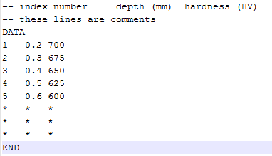

|
|
|


齿面断裂计算方法
齿面断裂出现在工作齿面区域，而不是在 30° 切线处的最高弯曲应力区域。
齿面断裂（TFF）可根据 ISO/TS 6336-4 技术规范草案计算。慕尼黑的 Annast 博士 [15] 早先进行的研究后来被其他人更新和扩展。Witzig [16] 编写了 ISO/TS 6336-4 的初稿。重要提示：ISO/TS 6336-4 中规定的 TFF 仅适用于渗碳淬硬材料。
此外，一种新的半解析计算方法正处于标准化过程中（ISO 6336-4 N1457 草案）。该方法考虑了齿轮上每个离散点处发生的循环多轴应力，这些应力可能导致齿面断裂。多轴疲劳准则设定为包括不同应力场：压力（赫兹理论）、表面淬火处理后的残余应力以及局部材料抗力。新增了一张图表。它包含材料暴露分布和剪应力分布的颜色图。此外，齿面断裂起始点的最危险点已标出。
点击加号按钮以输入齿面断裂所需的参数。
硬化深度 CHD
你可以输入预期的硬化深度（渗氮钢为硬度 HV400，其他所有钢为硬度 HV550）。你也可以输入硬度 HV300。此值随后用于以图形方式显示硬化曲线。输入适用于最终机械加工（磨削后）测量的深度。
输入此数据时，将根据 DNV 41.2 [11] 自动计算硬化表面的安全性。此处使用最小值 t400（渗氮钢）或 t550（所有其他钢）。如果仅知道 HV300 的值，则使用该值。但此时的计算结果应仅视为参考。计算按 [11] 中“亚表面疲劳”一节所述的方式进行。还需要按 DNV 41.2 的规定输入定义 CHD 硬化深度系数 YC 所需的值。该计算与推荐硬化深度提案的计算方法不同，但结果仍然相似。为获得合理的硬化深度建议，建议通过选择 来调用相应计算。硬化深度的最大值仅用于检查齿顶处的硬化深度，主要用于文档记录。
有三种计算选项：
- 使用齿轮材料的硬度文件，如果该文件已在数据库中存在。
- 选择一个包含硬度信息的独立文件
- 输入心部硬度以及根据Lang或Thomas（如ISO/TS 6336-4）直接输入生成理论硬度曲线的方法。
使用测量得到的硬化曲线按 ISO/TS 6336-4 进行齿面断裂计算
对维斯塔斯（2017年）在风力发电场进行的测量评估由 ISO TC60-WG6 委员会完成，结果表明，根据 ISO/TS 6336-4 方法测定的硬度曲线无法获得可靠结果（由于个体测量点的离散性）。我们建议使用托马斯（或兰格）定义的理论硬度曲线近似测量硬度曲线，并将此值用于计算。

图15.5：硬度文件的结构（重要：深度值必须以 mm 为单位输入）
齿面断裂计算结果显示在报告中（选择 报告 > 齿面断裂）。
Calculation method for tooth flank fracture
Tooth flank fracture appears in the area of the active tooth flank instead of in the area of the highest bending stress at the 30° tangent.
Tooth flank fracture (TFF) can be calculated according to the draft ISO Technical Specification ISO/TS 6336-4. Earlier investigations performed by Dr Annast in Munich [15] have later been updated and expanded by others. Witzig [16] has put together a first draft of ISO/TS 6336-4. Important: TFF as specified in ISO/TS 6336-4 can only be applied for case-hardened materials.
Additionally, a new semi-analytical calculation method is in the standardization process (ISO 6336-4 N1457 draft). This method takes into consideration the cyclical multiaxial stresses that occur at each discretization point on the gear and could lead to tooth flank fracture. The multiaxial fatigue criterion is set to include different stress fields: pressure (Hertzian theory), residual due to the surface hardening treatment, and the local material resistance. A new graphic has been added. It consists of a color plot of the material exposure distribution and shear stress distribution. Additionally, the most critical point of the tooth flank fracture initiation is marked.
Click on the Plus button to enter the data required for tooth flank fracture.
Hardening depth CHD
You can input the intended hardening depth (for hardness HV400, for nitrided steels, or HV550 for all other steels). You can also input the hardness HV300. This value is then used to display the hardening curve as a graphic. The input applies to the depth measured during final machining (after grinding).
When you input this data, the safety of the hardened surface layer is calculated automatically according to DNV 41.2 [11]. A minimum value of t400 (nitrided steel) or t550 (all other steels) is used here. If only the value for HV300 is known, this value is then used. However, the calculation should then only be seen as an indication. The calculation is performed as described in the 'Subsurface fatigue' section in [11]. The values required to define the CHD hardening depth coefficient YC, as specified in DNV 41.2, are also needed. The calculation does not use the same approach as the calculation for the proposal for the recommended hardening depth, but still returns similar results. To obtain a proposal for a sensible hardening depth, we recommend you call the relevant calculation by selecting . A maximum value for the hardening depth is only used to check the hardening depth at the tooth tip. It is mainly used for documentation purposes.
There are three calculation options:
- Use a hardness file for the gear material, if this file already exists in the database
- Select an independent file with the hardness information
- Enter the core hardness and a method for generating a theoretical hardness curve according to Lang or Thomas (as in ISO/TS 6336-4) directly
Using measured hardening curves for tooth flank fracture according to ISO/TS 6336-4
Evaluations of measurements taken at wind power installations by Vestas (2017) in the ISO TC60-WG6 committee have shown that reliable results cannot be obtained using measured hardness curves according to the method specified in ISO/TS 6336-4 (due to the scatter of the individual measuring points). We recommend that you use the theoretical hardness curve defined by Thomas (or Lang) to approximate the measured hardness curve and then use this value in the calculation.
Figure 15.5: Structure of the hardness file (important: depth values must be entered in mm)
The results of the tooth flank fracture calculation are given in a report (select Report > Tooth flank fracture).